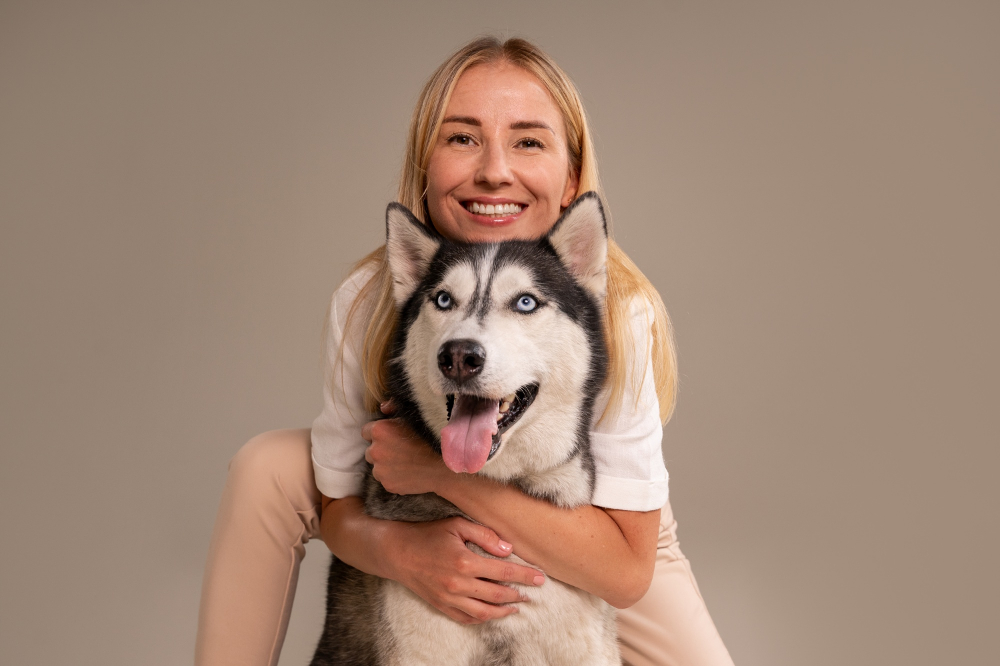
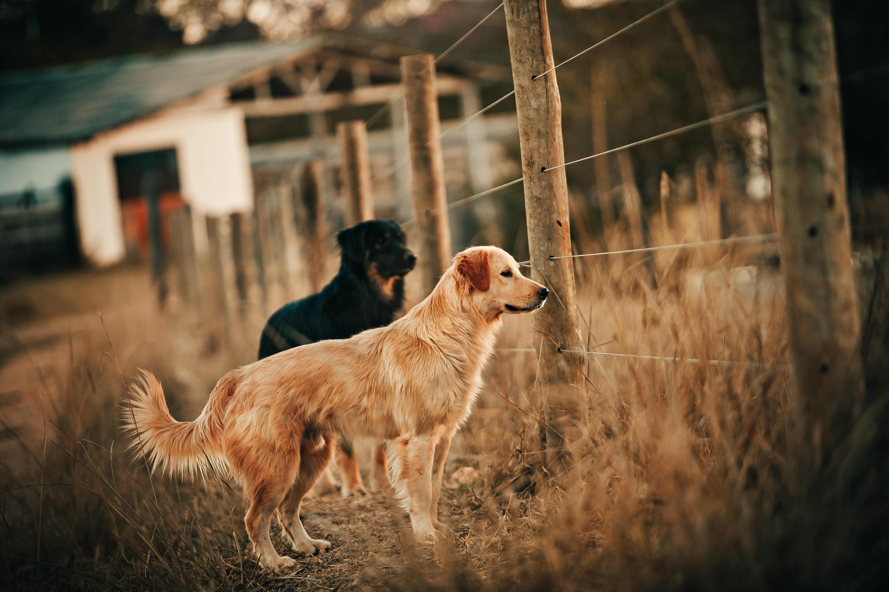

Жінка викреслила дітей із заповіту і залишила багату спадщину своїм котам і собакам
Літня жінка в Китаї вирішила залишити всі свої статки в розмірі близько 2,8 мільйона доларів своїм котам і собакам замість дорослих дітей.
Як пише South China Morning Post, мешканка Шанхаю на прізвище Лю змінила свій заповіт через те, що її діти знехтували нею в старості.
Натомість товариство і душевний комфорт старенькій забезпечували її домашні тварини.

На Місяці знайшли унікальний тип породи, якої не існує більше ніде в Сонячній системі
Ці породи мають унікальні хімічні властивості і утворились у глибоких надрах Місяця 3,5 мільярда років тому.
"Походження вулканічних місячних порід – це захоплююча історія про "лавину" нестабільної кристалічної купи планетарного масштабу,
утвореної охолодженням первісного магматичного океану", – сказав професор
Брістольського університету та один із керівників групи дослідників Тім Елліотт.

Scientists have learned why dogs wag their tails
According to scientists, this could be influenced by people's inclination to rhythms.
"A predisposition to rhythms may have prompted humans to select for the noticeable rhythmic tail wagging in dogs.
Tail wagging may have been one of the goals of the domestication process, when people (un)consciously selected dogs that wag their tails more often and,
perhaps more rhythmically.

Ветеринар назвав 5 порід собак, які потребують особливого догляду
Якщо ви вперше заводите собаку, краще оминайте ці породи.
1. Французький бульдог. Ці собаки зазвичай мають проблеми з шиєю, колінами, спиною та серцем.
2. Чихуахуа. Вони зухвалі та впевнені в собі. Але також вони схильні до захворювань серця і очей.
3. Лабрадор-ретривер. Вони мають нескінченну енергію і постійно встромляють свого носа у чужі справи – у буквальному та переносному значенні.
Але вони також схильні до проблем з лапами, особливо з колінними суглобами.
4. Німецький дог. Їм потрібно багато їжі, вони схильні до раку та серцевих захворювань. Їм також потрібно регулярно підстригати нігті.
5. Такса. Деякі з них мають "комплекс Наполеона" – тобто вони бувають надто агресивними, намагаючись компенсувати свій маленький розмір.
Їм також потрібні фізичні вправи, щоб уникнути надмірної ваги та схильності до захворювань міжхребцевих дисків.
Венеція вводить нові обмеження для туристів: що заборонять з 2024 року
З червня 2024 року у Венеції введуть обмеження на кількість людей в туристичних групах і заборонять гучномовці.
Італійська Венеція, яка вже з квітня 2024 року почне брати з туристів плату за вхід в місто, вирішила ввести додаткові обмеження для приїжджих.
Як пише The Associated Press з посиланням на заяву міської влади, починаючи з червня 2024 року туристичні групи будуть обмежені до 25 осіб,
що становить приблизно половину місткості туристичного автобуса. Крім того, на вулицях міста буде заборонено використання гучномовців.